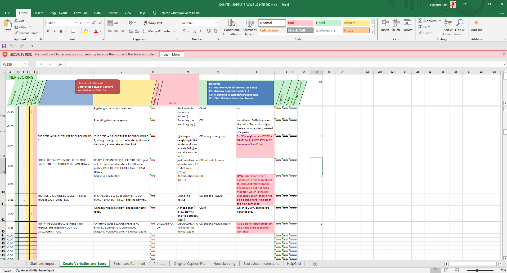
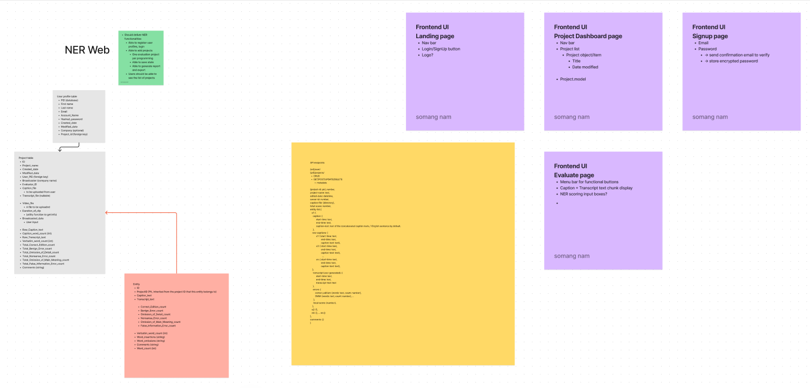
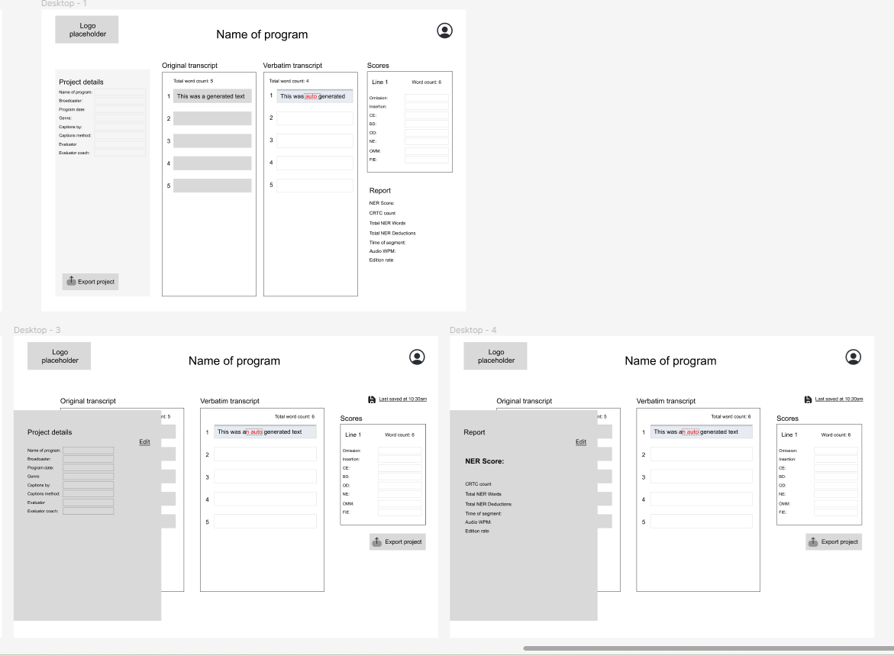
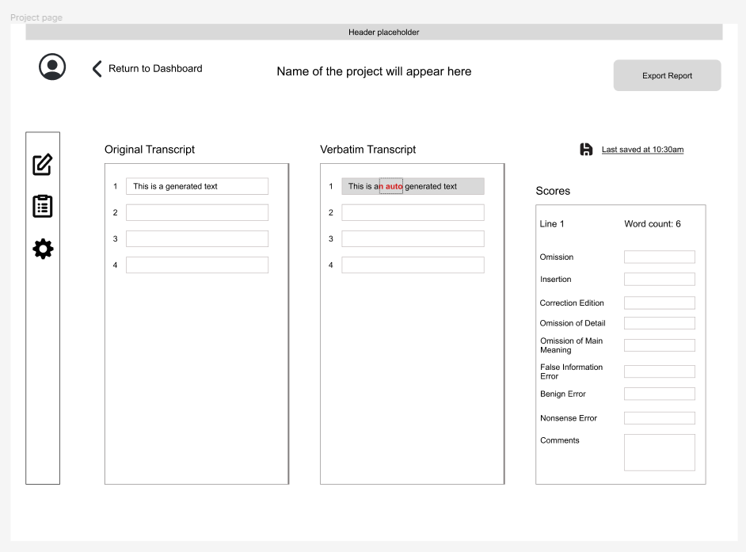
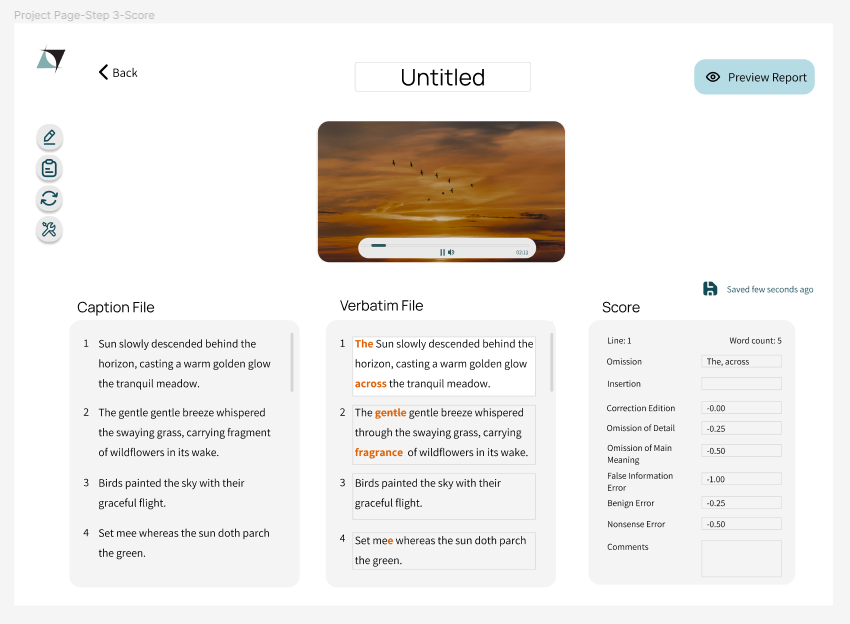
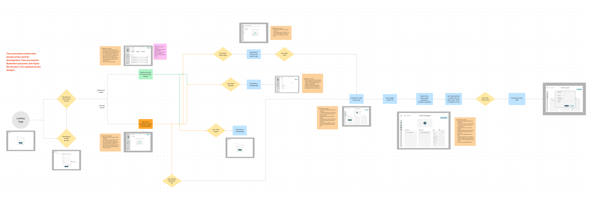
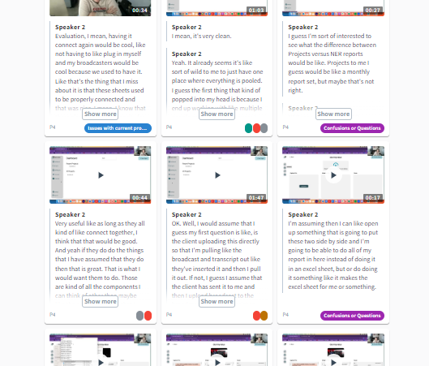
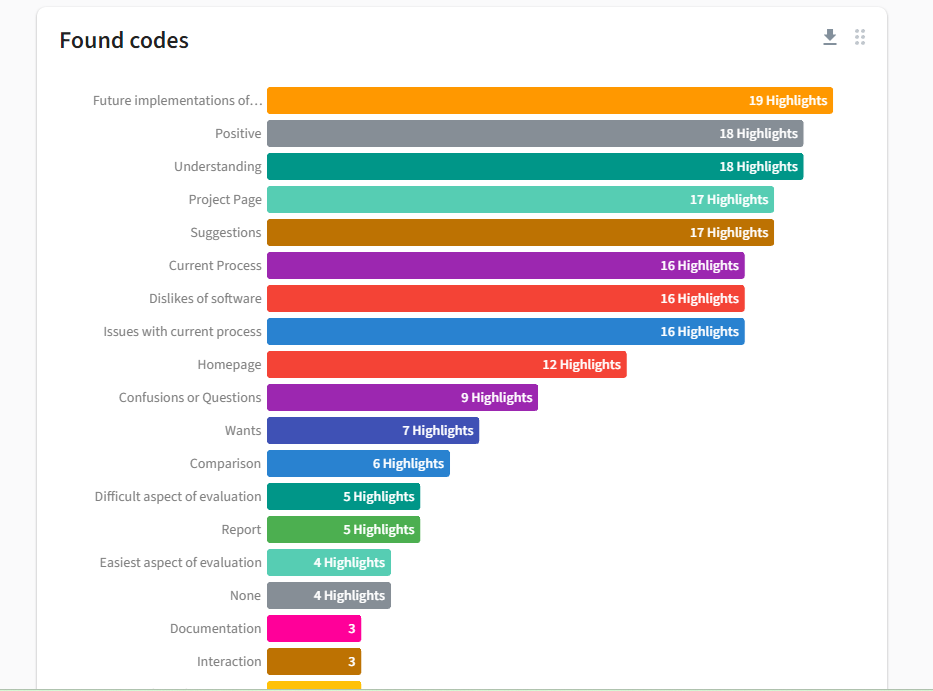
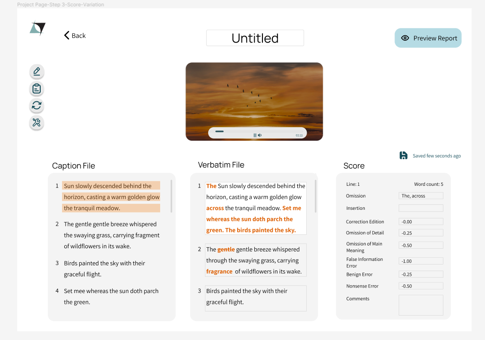
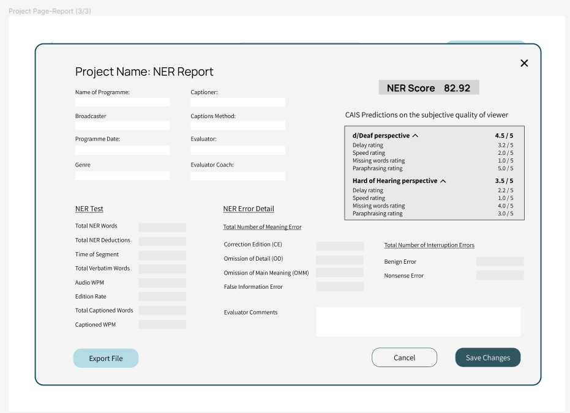

2024, Designing a user interface for caption quality evaluation tool
The Canadian Radio-television and Telecommunications Commission (CRTC) regulates the quality of Closed Captioning (link), which uses a specific model to assess. The assessment requires certified evaluators to compare the televised captions with the transcript and generate a quality report for the broadcasters to audit the quality. A software tool was designed and developed from zero to one using the User Centre Design principles in this project. It iterated two cycles of user research, including the System Usability Scale (SUS) and user studies with initial user interface design and an Alpha prototype.
Duration: 11 months
Problem to solve: Expert users did not have a dedicated software and interface, leading to barriers and inefficient workflow.
As a Product Manager / Lead Researcher , I designed the UX research, interviews, questionnaires, led and directed the interface design. In addition, I discussed the change from the design cycles along with the developers for lean and agile development.
1. Requirement gathering
From the initial stage, two objectives were focused on to develop a dedicated user interface.
- Task requirements
- Need, Want, and Wish lists (Desired workflow)
Figure 1. Old interface using VBA. It does not have intuitive controls and cluttered elements as the software is not dedicated to the task.
Figure 2. User requirements made in FigJam. Note that the diagram is not in the traditional format as it was to communicate with the software developers.
2. Prototyping with the baseline knowledge
Initially, the Canadian NER model quality assessment procedure was studied to see how error severity was determined and how each error types were defined. The requirement lists and benchmarking of some other existing tools for other purposes were taken as design references. This allowed us to go through the initial low-fidelity prototype and potential user journey.
Figure 3. Low fidelity wireframe v1
Figure 4. Low fidelity wireframe v2
High fidelity prototype
Due to time and resource limitations, the initial study was only done 6 months into the project. The project had to work with the software development team in parallel leaving no time to be wasted. Therefore, the team evaluated the sketches, and the initial proof of concept level of software was implemented to be tested with the expert users. Then, the first high-fidelity prototype was created.
Figure 5. High fidelity prototype
To communicate with the stakeholders, a user journey of the desired system was also presented.
Figure 6. User journey
3. First user study
The first user study was planned to test the interface and system's usability and to learn deeper into the experts' workflow and desires. Therefore, the study was designed in the following order:
- Demographic questionnaire
- System Usability Scale on the current interface
- User tasks (think aloud protocol) with semi-structured interview questions
Figure 7. Coded qualitative data
Figure 8. Codes found from interview data
4. Design recommendations, second iteration of the user research, and after...
These design recommendations were presented and discussed with the software development team, followed by an interface update on the tool. Upon implementation, a second round of user study was performed with the same five expert users. The second study was designed in the following order:
- User tasks (think aloud protocol) with semi-structured interview questions
- System Usability Scale on the NERWEB interface
The SUS score comparison showed improved usability from the conventional interface to the new interface, which was already proven by participants' reactions in the interview. A non-parametric statistical analysis for within-group comparison (Wilcoxon Signed-rank test) was performed to compare the two sets of SUS scores.
Figure 9. NERWEB final interface
Figure 10. Final report screen with CAIS prediction scores